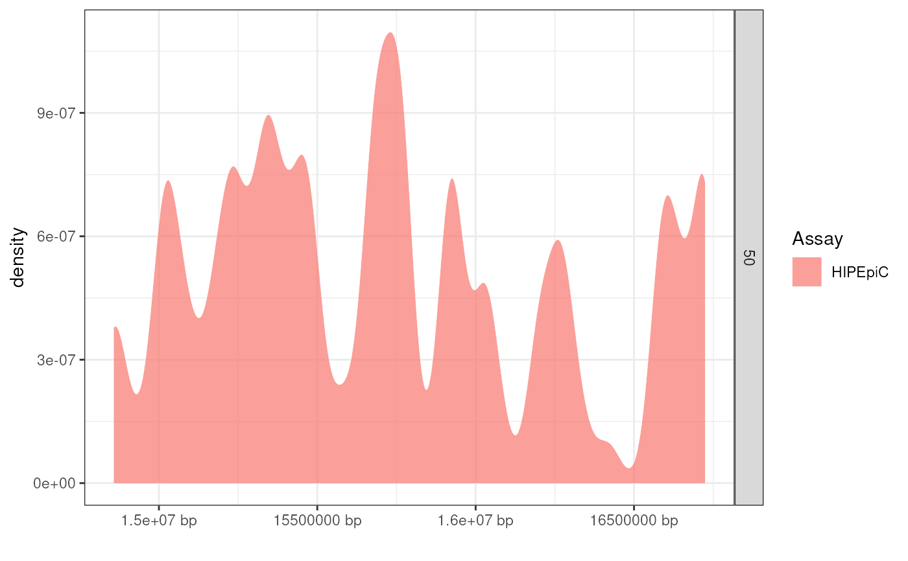

Plots the distribution of annotations across a genomic region (x-axis).
Usage
XGR_plot_peaks(
gr.lib,
dat,
fill_var = "Assay",
facet_var = "Source",
geom = "density",
locus = NULL,
adjust = 0.2,
show_plot = TRUE,
legend = TRUE,
as_ggplot = TRUE,
trim_xlims = FALSE
)Arguments
- gr.lib
GRangesobject of annotations.- dat
Data.frame with at least the following columns:
- SNP
SNP RSID
- CHR
chromosome
- POS
position
- fill_var
Fill variable.
- facet_var
Row facet variable.
- geom
Plot type ("density", or "histogram").
- locus
[Optional] Locus name.
- adjust
The granularity of the peaks.
- show_plot
Print the plot.
- legend
A logical value indicates whether to show legend or not. Default is
TRUE- as_ggplot
Return plot as
ggplot2(TRUE) orTracks(FALSE) object.- trim_xlims
Trim the x-axis limits.
Examples
#### Import example query ####
gr.lib <- echoannot::xgr_example
#### Filter query ####
gr.filt <- echoannot::XGR_filter_sources(gr.lib = gr.lib)
gr.filt <- echoannot::XGR_filter_assays(gr.lib = gr.filt)
#### Plot query #####
XGR_track <- echoplot::XGR_plot_peaks(
gr.lib = gr.filt,
dat = echodata::BST1,
fill_var = "Assay",
facet_var = "Source")
#> Warning: Using `size` aesthetic for lines was deprecated in ggplot2 3.4.0.
#> ℹ Please use `linewidth` instead.
#> ℹ The deprecated feature was likely used in the ggbio package.
#> Please report the issue at <https://github.com/lawremi/ggbio/issues>.
#> Warning: Ignoring unknown parameters: `facets`
#> Warning: no non-missing arguments to max; returning -Inf
